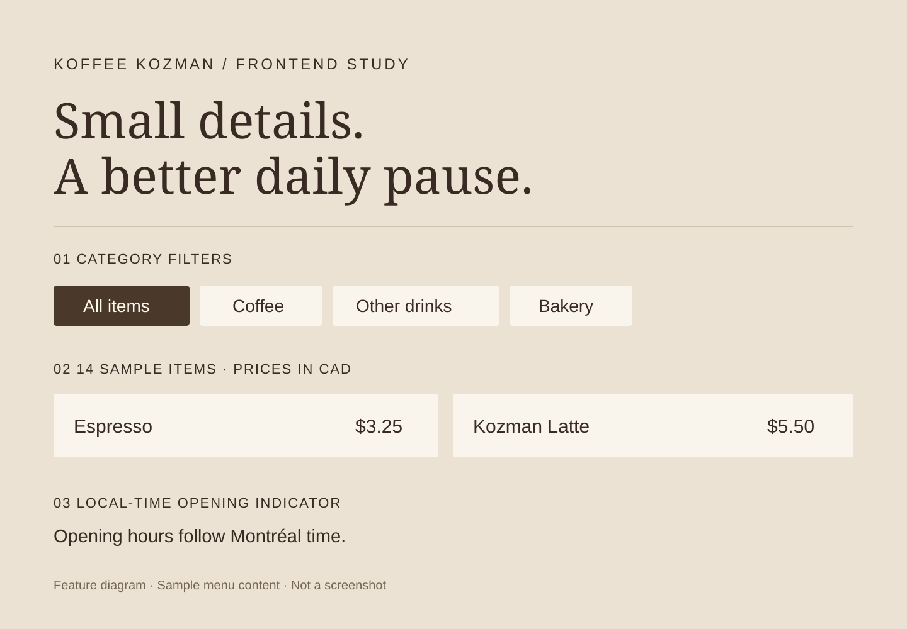

Software Engineering student / Montréal
Hi, I’m Adam.
I build web
applications.
I study Software Engineering at Concordia University. I build full-stack web applications—from appointment booking to tools for students.
01 / Selected work
A closer look at
what I’m building.
Four projects, from individual websites to collaborative applications. Open a project for the details.

Joe’s Blendz
A booking website that turns a part-time barber’s changing availability into bookable appointments.
React · TypeScript · Cloudflare D1

Smart Course Companion
Course, assessment, and grade management for students and instructors. Built with a team of four.
JavaScript · Express · SQLite

Koffee Kozman
A coffee-shop website focused on a useful menu, accessible navigation, and thoughtful frontend details.
HTML · CSS · JavaScript

CareerConnect
A team-built job-search and application-tracking platform, currently in frontend development.
React · TypeScript · Vite · Tailwind CSS
The foundations
Earlier work in Java.
Small programs that helped build my programming fundamentals.
02 / About me
Learning the fundamentals.
Putting them to work.
I’m Adam Kozman, a Software Engineering student based in Montréal. I enjoy turning practical needs into applications that people can understand and use.
My projects combine JavaScript and TypeScript web development with Java programming fundamentals. Team projects are also teaching me how to work through requirements, divide responsibilities, and build software together.
BEng, Software Engineering · Concordia University
2025–2029 (expected)
What I work with
Languages
JavaScript, TypeScript, Java, SQL, HTML, CSS
Web & data
React, Node.js, Express, Tailwind CSS, SQLite, Cloudflare D1, Drizzle ORM
Tools & teamwork
Git, GitHub, npm, Vite, VS Code, Eclipse, Agile teamwork, issue tracking
In practice
REST APIs, responsive layouts, semantic HTML, keyboard accessibility, input validation, debugging, and testing
Beyond the tool names
Skills, applied.
Application logic
Joe’s Blendz checks service duration against availability so bookings don’t overlap.
See the booking flow ↗Full-stack development
My Course Companion work connects course and assessment workflows with an Express API and SQLite storage.
See my contribution ↗Frontend fundamentals
Koffee Kozman’s menu stays readable without JavaScript, with filtering added as an enhancement.
See the frontend details ↗03 / Get in touch
Let’s talk about
what comes next.
Have a project, an opportunity, or a question about my work? I’d be happy to hear from you.
adamkozman7@gmail.com ↗